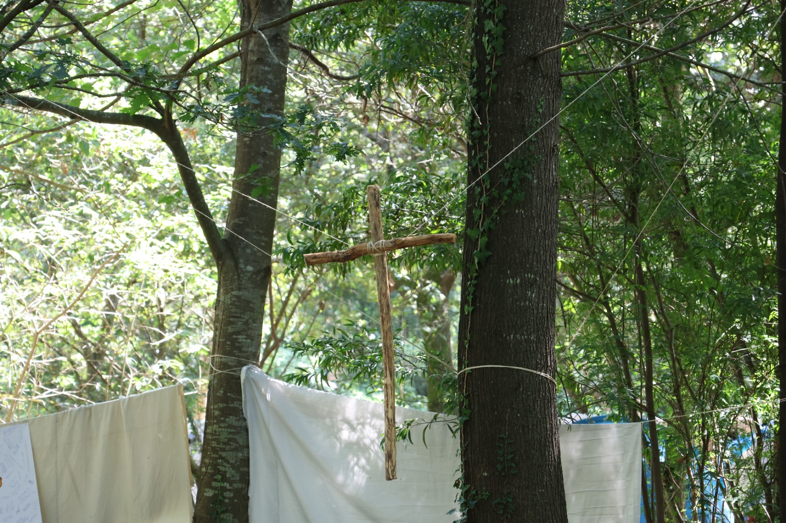
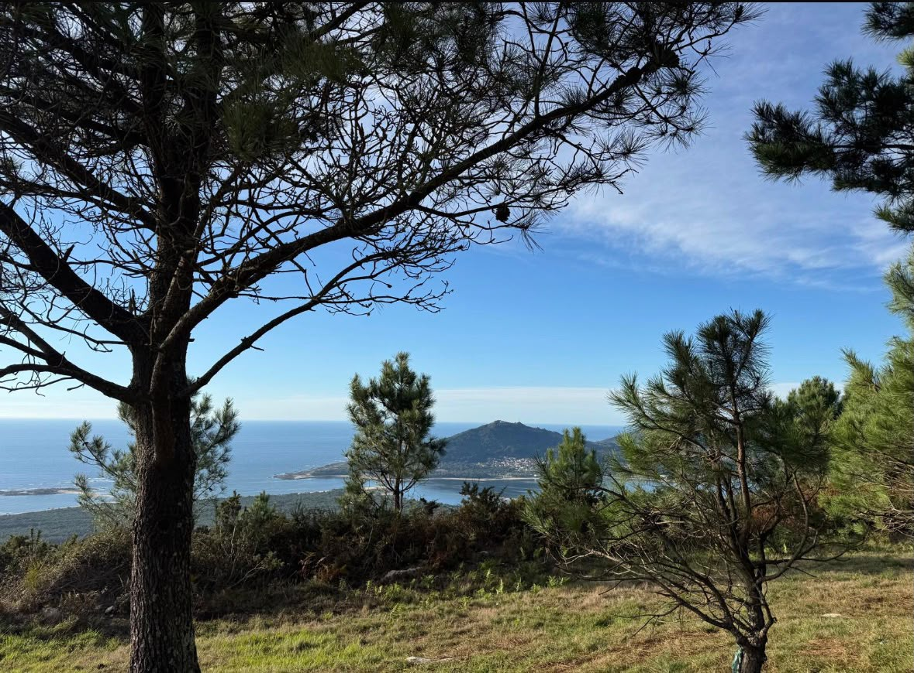
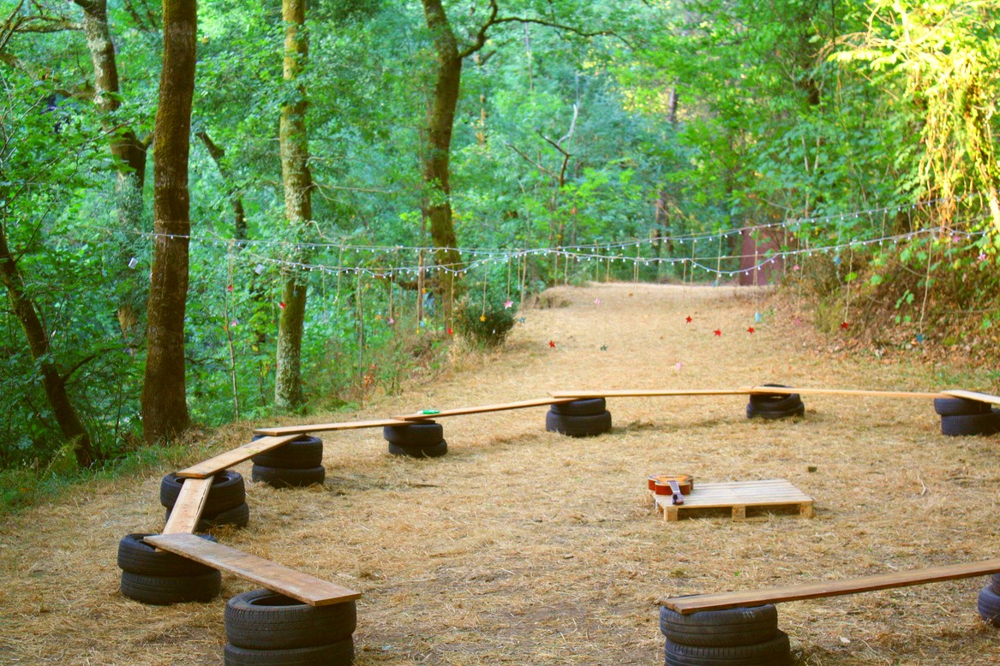

A NOSSA HISTÓRIA
QUEM
QUEM
SOMOS?
Antes de haver um PATO, houve uma ideia.
Porquê criar o PATO?
Aqui vamos explicar o que motivou a criação do projeto, as necessidades que identificámos e aquilo que queremos construir.

E para quem?
O PATO é um espaço de encontro, partilha e descoberta. Aqui vamos explicar a quem se destina o campo e o que podem esperar desta experiência.

Como tudo começou.
Aqui vamos contar como nasceu a ideia do PATO e como começou a ganhar forma.
